15 MARS 2023 :
Au même titre que l'ENSAD, Paris - École Estienne, Paris - ESAD Valenciennes Écoles occupées : - Beaux-arts de Paris - Beaux-arts de Cergy - Beaux-arts de Bordeaux - HEAR à Strasbourg - Villa Arson, Nice - Beaux-arts de Lyon - Beaux-arts d'Aix-en-Provence - Beaux-arts de Tours - Beaux-arts de Saint Nazaire - Beaux-arts de Lorient - Beaux-arts de Brest, l'ESADSE est à présent occupée suite au vote de l'AG. Rdv Salle Blanche Bat.H
Cette occupation se fait en contestation :
Du désengagement de l'état dans le financement des écoles d'art - design - architecture les menaçant fermetures.
Le projet de réforme des retraites du gouvernement , ses conséquences sur l'ensemble de la population et sur les métiers de l'art et du design.
Plus généralement la politique libérale et la manière dont elle est mise en place par le gouvernement.
Plus localement, les oppressions et les absurdités que l'on subit quotidiennement à l'école, dans l'EPCC et à Saint-Étienne.
Réapproprions-nous l'espace et le temps de l'école, qui nous appartient, mais nous semblent trop souvent inaccessible #frichepartout
Parlons ensemble, débattons, discutons autour de nos oppressions, problématiques, enjeux, des manières d'apprendre et ouvrons des tentatives de faire ensemble.
Expérimentons l'autogestion, de vivre collectivement, de cuisiner, dormir, manger, organiser, planifier fugitivement, militer et apprendre ensemble !!!
# # # # # # # # # # # # # # # # # # # # # # # # # # # # # # # # # # # # # # # # # # # #
Bonjour à toutes,
Hier en fin d'après midi, Jean-Yves Gauchier (directeur de l'EPCC en intérim) est venu à l'occupation pour nous annoncer que des agents de sécurité allaient être postés tout le weekend aux portes d'entrée et de sortie de secours du bâtiment pour contrôler les cartes étudiant.es.
L'occupation n'est pas une pyjama party, elle doit être ouverte aux militant.es extérieur.es à l'école et inclure les mouvements sociaux en cours à Sainté et dans toute la France.
Nous avons donc décidé d'annuler l'occupation de ce weekend puisque nous ne sommes pas d'accord avec cette décision mais nous n'étions pas assez nombreuxses pour la contrer.
Jeudi, après le rassemblement contre le 49.3, un beau concert a eu lieu et a rassemblé une cinquantaine de personnes, étudiant.es de l'école, étudiant.es de la fac et de lycées stéphanois, adelphes militant.es de Sainté, précaires et copaines. Ce fut un très beau moment.
N'ayons pas peur d'ouvrir nos portes aux personnes extérieures à l'école, ne tombons pas dans les mécaniques de la sécurité.
Nous avons hâte de continuer cette occupation la semaine prochaine et vous invitons à nous rejoindre, discuter, dormir, organiser, faire des affiches, des pancartes, des banderoles, utiliser nos outils, nos ressources, nos materiaux et les mettre à disposition de la lutte sociale.
À très vite
# # # # # # # # # # # # # # # # # # # # # # # # # # # # # # # # # # # # # # # # # # # #
Bonjour, l’occupation continue !
Voici le programme pour ce début de semaine, venez nombreux.ses ! (Salle blanche, Bat.H)
Appel à témoignages : À la demande la direction, nous constituons un recueil de témoignages concernant les abus et/ou les comportements abusifs de la part du corps enseignant : vostemoignages@protonmail.com (nous voulons créer un espace de parole bienveillant).
Mardi 21 mars 2023
Matin
9h30 – Participation à l'action blocage rond-point Geoffroy Guichard
Midi
13h – Assemblée Générale (1h), salle blanche, occupation (ODJ : Point info occupation / Relais infos mobilisation réforme des retraites + école d’art en danger / Continuité des mots de trop, appel à témoignages / Conseil d’Administration)
Après-midi
16h – Gouter + Arpentage : l’alternative ambiante + manifeste du tiers-paysage Gilles Clément (Jardinier Paysagiste Anarchiste) #restonsenfriche (1h30)
Soir
18h – Projections et discussions
18h – Les Démons de Dorothy, Alexis Langlois (30min)
19h – Delphine et Carole, insoumuses, Callisto, Mc Nulty (68min)
21h – Cantine de l’occupation (19h aide récup/cuisine)
Mercredi 22 mars 2023
Matin
10h – Conseil d’Administration de l’EPCC Cité du Design/ESADSE
Midi
13h – Assemblée Générale (1h) salle blanche, occupation
Après-midi
14h – Atelier banderole, affiches, tracts (pour manifestation jeudi 23mars)
16h – Goûter + Discussion-Écriture-Édition : Saint-Étienne, capitale du Design
Soir
20h (la Cale) – Réunion publique contre le SNU (Service national universel) par le collectif antimilitariste stéphanois, la Cale, 16 rue Royet
21h – Cantine de l’occupation (19h aide récup/cuisine)
Continuons la lutte, continuons l’occupation !
# # # # # # # # # # # # # # # # # # # # # # # # # # # # # # # # # # # # # # # # # # # #
Bonjour,
Nous apportons quelques précisions au mail précèdent qui a clairement pour objectif de nous monter les un.es contre les autres sous des airs d’information.
D’abord la présence d’une surveillance est une décision de la direction qui nous est imposée et absolument pas une demande de notre part. Dans plusieurs autres écoles, l’occupation se fait sans aucun personnel mobilisé.
Les montants qui nous étaient annoncés la semaine dernière était de 368e/nuit et 1700e/we. Nous aimerions nous réjouir que le personnel de surveillance soit mieux payé mais il semble plutôt qu’il soit renforcé inutilement.
On pourrait également rappeler que cette occupation se fait en contestation du désengagement de l’état et de la région dans le financement des écoles d’art qui affecte bien plus violemment la santé économique de notre école sur le long terme.
Nous avons déjà discuté de ces sujets lors d’une précédente assemblée. De nouvelles assemblées se tiennent quotidiennement (dont maintenant) où nous discuterons, entre autres, des suites de l’occupation et de ce que nous pouvons faire de cet espace-temps unique à l’école.
Si la menace d’une baisse du budget pédagogie est bien mise à exécution, ce sera alors l’occasion de reprendre en main nos apprentissages, organiser nos workshops nos conférences, nos cours.
Une occupation est alors un espace idéal pour y penser et en discuter collectivement.
Un cycle de réunion sur différents sujets touchant à notre apprentissage et à nos pratiques est prévu. La première a lieu demain et aura pour thème « Sté, capitale du design ».
Profitons, de tels contextes sont rares dans nos parcours bien cadrés.
Amicalement
# # # # # # # # # # # # # # # # # # # # # # # # # # # # # # # # # # # # # # # # # # # #
Bonjour à toustes !
Suite à une décision prise lors d'une assemblée générale de l'occupation, avec la présence de plusieurs étudiant.e.s des années 3, 4, et 5 art, nous vous annonçons que nous continuerons d'occuper la salle blanche des H ce soir et demain.
Nous proposons une séance d'accrochage demain à14h dans la salle blanche, alternative au cours prévu initialement. Cette séance sera exclusivement dédiée et réservée aux étudiant.e.s. Nous invitons toute personnes, en art, en design, en première année, etc.
Chaque étudiant.e pourra parler de son travail, commenter celui des autres, donner et recevoir des conseils dans l'écoute et la bienveillance.
Nous souhaitons encourager chacun.e à avoir confiance en ellui et en les autres pour partager ses idées et sa vision des choses.
Nous proposerons des discussions sur des questions telles que :
Comment voulons-nous faire de l'art ou du design ?
Quelles sont les alternatives aux galeries ?
Comment s'entraider entre étudiant.e.s ?
Toutes les autres propositions de votre part est aussi les bienvenues !
# # # # # # # # # # # # # # # # # # # # # # # # # # # # # # # # # # # # # # # # # # # #
Bonjour,
Nous avons appris aujourd'hui la volonté de M. le préfet de la Loire de faire cesser cette occupation, volonté immédiatement relayée par la direction de notre établissement. L'échéance pour libérer les locaux est aujourd'hui (mercredi 22 mars 2023) à 19h30.
A l'AG de ce midi nous avons voté le refus de quitter l'occupation.
Nous appelons étudiant.es, enseignant.es, technicien.es, personnels, de l'ESADSE, de la Faculté Jean Monet et des différents établissements d'enseignement supérieur de Saint-Étienne, écoles d'arts en grève, syndicats étudiants, média et autres à rejoindre l'occupation dès cet après-midi.
Pour contrer l'expulsion retrouvons nous à 18h30 devant le batiment des arts au 3, rue Javelin Pagnon 42000 Saint-Étienne.
Depuis le mercredi 15 mars, l'École Supérieure d'Art et Design de Saint-Étienne (ESADSE) est occupée. Cette occupation se fait :
- en contestation du désengagement de l'État dans le financement des écoles d'Art, de Design et d'Architecture
- en soutien des écoles qui risquent la fermeture pour la raison précédente
- en contestation face à la réforme des retraites injuste et illégitime
- en protestation face à la crise démocratique, exprimée par l'usage abusif du 49.3 et de l'usage détourné et inapproprié des outils constitutionnels pour gouverner contre l'avis d'une très large majorité
- en dénonciation de la condition des étudiant.es, qui subissent de plein fouet l'augmentation des coûts au quotidien et les décisions politiques ignorant ou minimisant cette condition
- pour dénoncer les nombreux problèmes internes de discriminations et harcèlements entraînant un climat de violence et de peur
- pour la mise en place de dispositifs efficaces par l'administration pour protéger, accompagner et soutenir les étudiant.es et pour lutter contre les problèmes ci-dessus
Nous refusons les chantages liés aux budgets de l'école qui serait amoindris par l'occupation. Nous revendiquons une plus juste répartition des budgets d'argent public pour les écoles dans toute la France, mais aussi une meilleure gestion de celui-ci en interne.
La lutte continue.
# # # # # # # # # # # # # # # # # # # # # # # # # # # # # # # # # # # # # # # # # # # #
Merci à tous·tes pour votre soutien, individuel et collectif.
Nous étions plus de 150 personnes hier.
Sans votre présence hier, la soirée n’aurait probablement pas connue la même issue.
Les relations avec la direction risquent de se tendre d’avantage, à présent nous continuerons à vous informer sur l’évolution de l’occupation.
Malgré les intimidations répétées et quotidiennes, pseudo juridiques, économiques et sur nos scolarités personnelles nous ne lâcherons pas.
Nous nous retrouverons très vite en manif !
# # # # # # # # # # # # # # # # # # # # # # # # # # # # # # # # # # # # # # # # # # # #
Bonjour !
Aujourd'hui dans la salle blanche du batiment des Arts des etudiant.es s'organisent :
Toute la journée:
On s'autoforme a monter un serveur/ une serveuse informatique en local, pour créer une base de donnée, de ressources, de livres, de films, faire des dossiers partagés échanger nos projets, nos mémoires, et toutes autres initiatives qui vous/nous porterais !
A midi:
Picnic discution organisation des prochains ateliers
A partir de 14h:
Un atelier de création typographique avec les logiciels libre Inkscape et FontForge *★*★
En fin d'aprés midi:
Accrochage apéro ! ✻
La Salle d'accrochage est désormais un espace de travail et de collaboration alternatif a la pédagogie proposé a l'école; Ouverte a toustes; Libre de propositions; Tout est a définir ensemble;
à bientôt!
★Sont partagées les actions et paroles revendiquées par le collectif sur
@lafriche_esadse et https://ecolelutte.github.io/esadse_occupee/★
# # # # # # # # # # # # # # # # # # # # # # # # # # # # # # # # # # # # # # # # # # # #
Bonjour,
Suite au blocage du bâtiment H ce matin par l'administration, la réunion avec la direction, une prochaine réunion ouverte est prévue aujourd’hui à 17h.
Rassemblons-nous à 13h en Assemblée Générale (salle blanche Bâtiment H) pour discuter/décider ensemble de la suite de l’occupation.
La lutte continue
# # # # # # # # # # # # # # # # # # # # # # # # # # # # # # # # # # # # # # # # # # # #
Lundi 27 mars 2023
Communiqué de personnels de l’ESADSE-Cité du Design
Au moment d’une crise nationale sociale majeure concernant les retraites de l’ensemble de la population,
mais aussi par ailleurs d’une mise en difficulté des écoles d’art à assurer leurs missions d’enseignement supérieur et de service public,
Nous apportons notre soutien à l’engagement et aux luttes des étudiant.es de l’Ecole Supérieure d’art et design de Saint-Etienne.
des personnels administratifs,
des technicien-nes,
des assistant-es d’enseignement artistique,
des professeur-es
de l’Ecole Supérieure d’Art et Design de Saint-Etienne
et de la Cité du Design.
# # # # # # # # # # # # # # # # # # # # # # # # # # # # # # # # # # # # # # # # # # # #
Bonjour,
Assemblée Générale 13h Plateau 2-3 Design !!!
On s'organise !!!
+
Avec la team Azimuts, une rencontre est prévue avec Louise Moulin graphiste, Gilet Jaune et militante, qui a créé la revue Plein Le Dos, une revue faite par et pour les GJ et qui se distribué en manif et Anaïs Enjalbert, graphiste de Solidaires à Sainté, c'est elle qui fait les énorme drapeau et parapluie coloré en tissus qu'on voit en manif.
« On voulait leur parler de l'écriture en manif et de comment elles elle participent aux luttes en tant que designeuse-artiste. C'est lié au numéro 56 qui va parler de "Se permettre l'écriture en tant que designer·euse artiste chercheur·euse. De base on voulait faire un interview en manif mais avec ce qui se passe à l'école on se dit que ça pourrait vous intéresser d'échanger avec elles aussi »
Rdv : 17h à l’occupation (salle blanche, bat.H)
# # # # # # # # # # # # # # # # # # # # # # # # # # # # # # # # # # # # # # # # # # # #
https://lenumerozero.info/APPEL-A-SE-RASSEMBLER-JEUDI-30-MARS-A-19H-DEVANT-LES-PREFECTURES-DU-PAYS-6184
Le Numéro Zéro est un site sur l'actualité et la mémoire des luttes à Saint-Étienne et ailleurs.
c'est un site participatif : l’info est faite par les lecteur-ices, tout le monde peut publier !
Il contient des articles et un agenda des événements de la localité stéphanoise =>=>=>
# # # # # # # # # # # # # # # # # # # # # # # # # # # # # # # # # # # # # # # # # # # #
Bonjour à toustes;
une AG s'organise aujourd'hui à 13h sur le plateau année 1.
Seront à l'ordre du jour les changements quant aux modes d'actions de l'occupation, et une liste de revendications qui, si elles sont votées , remonteront à l'administration dans la journée.
Cette semaine l'occupation a soutenue une tribune des écoles d'art et de Design en lutte; contre la réponse financiére non suffisante que le ministére de la Culture a proposé la semaine derniére.
Vous pouvez lire les informations quant à cette actualité sur le site de Télérama:
https://www.telerama.fr/sortir/non-au-devenir-start-up-l-appel-des-ecoles-d-art-et-de-design-contre-la-privatisation-de-leur-filiere-7014935.php
:!A tout à l'heure!:
# # # # # # # # # # # # # # # # # # # # # # # # # # # # # # # # # # # # # # # # # # # #
 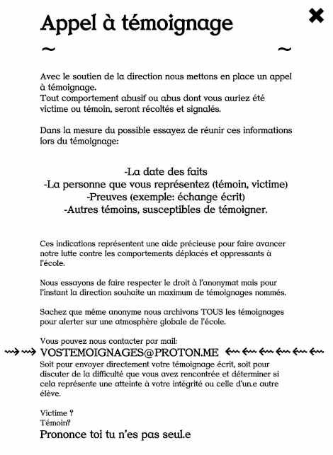
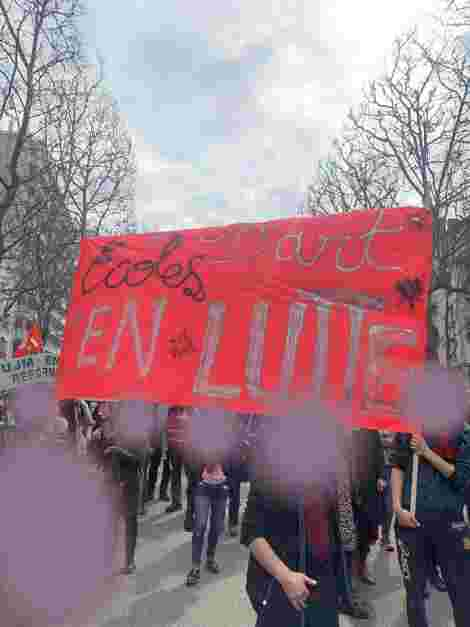
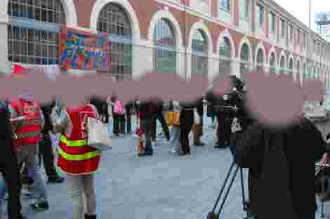
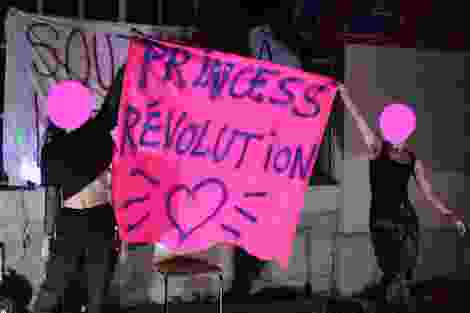
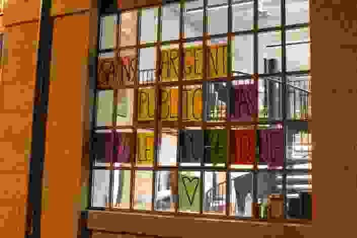
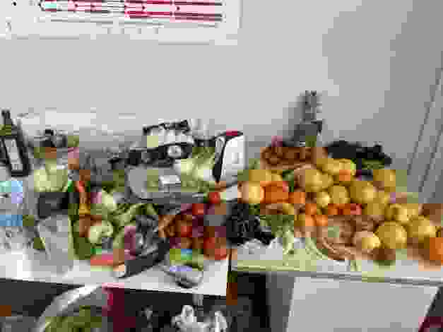
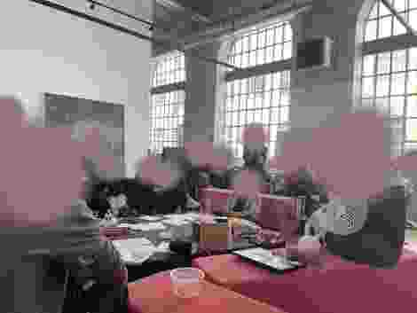
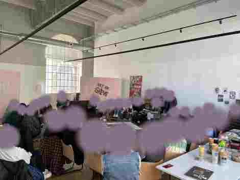
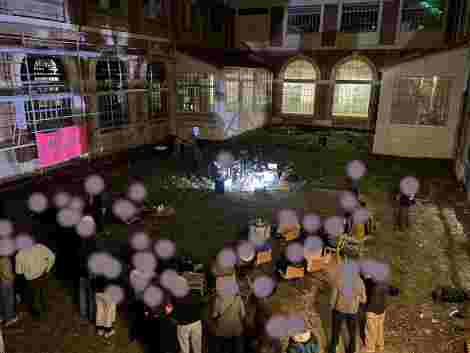
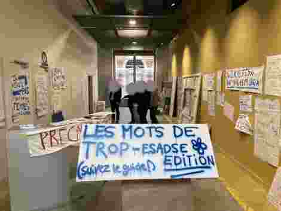
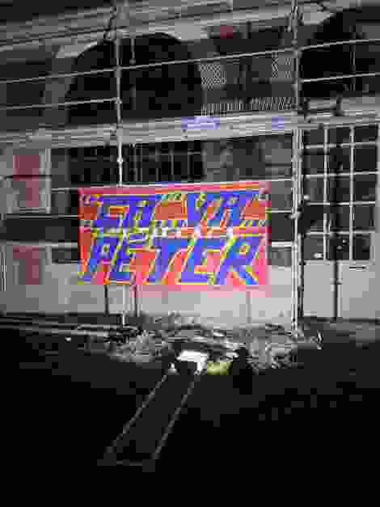
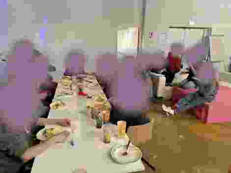
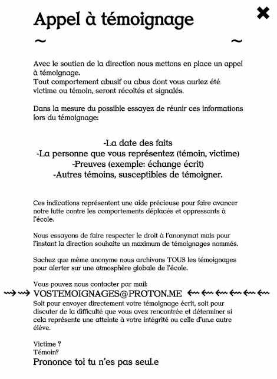
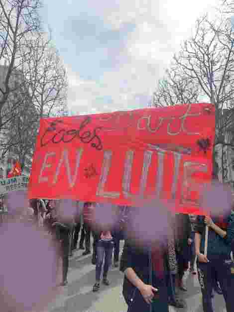
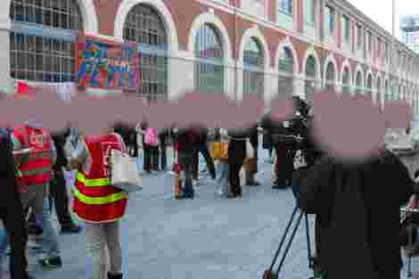
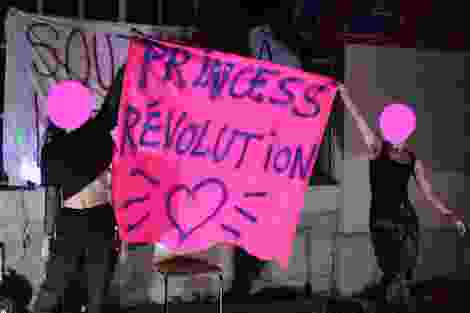
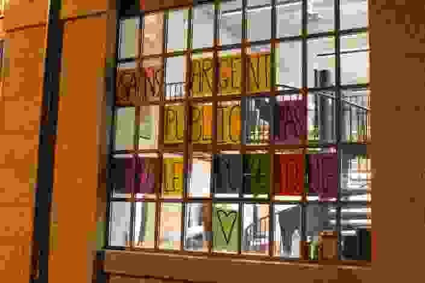
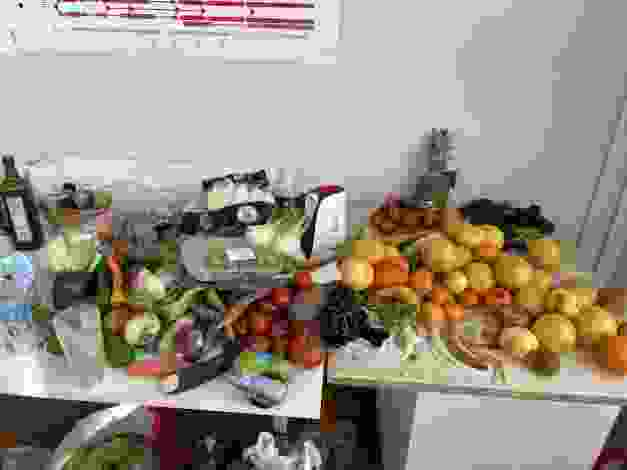
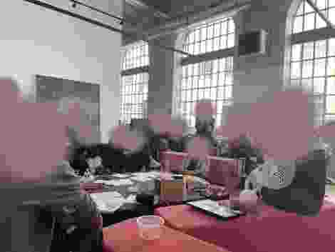
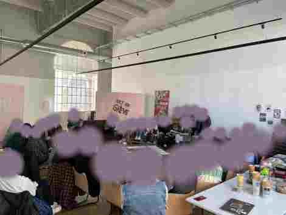
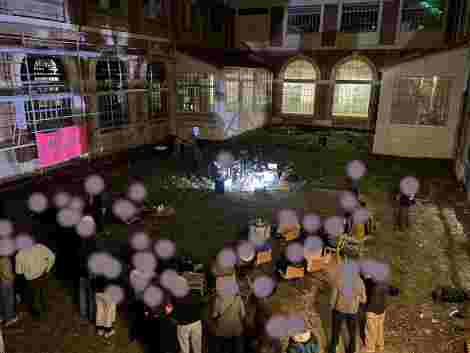
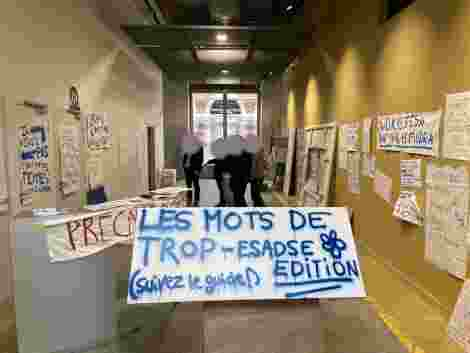
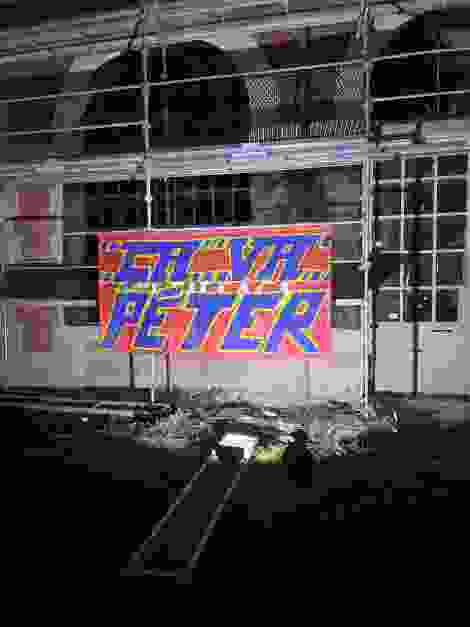
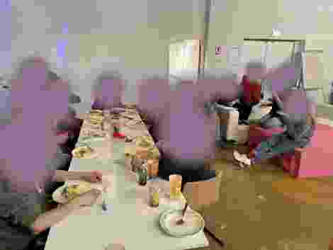